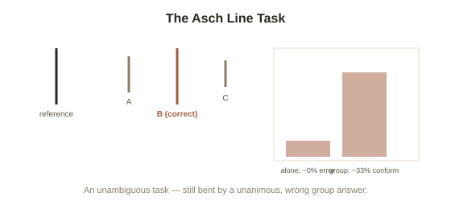

Chapter 2: Asch's Line Task — Conforming to an Obviously Wrong Answer
Chapter 1 focused on obedience — following a direct order from an authority figure. This chapter covers a related but genuinely distinct pressure: conformity, or going along with what a group of ordinary peers seems to believe, with no authority figure giving any order at all. Psychologist Solomon Asch ran the defining experiment on this in the early 1950s, and its most disturbing finding isn't that people conformed — it's how trivial the task was that broke them.
A task with an obvious right answer
Asch showed groups of participants a simple card with one reference line, then a second card with three comparison lines of clearly different lengths, and asked each person, out loud, which comparison line matched the reference line in length. The task was designed to have an unambiguous correct answer — alone, participants got it right essentially every time. The trick: in each group, only one person was a genuine, naive participant; everyone else was a confederate instructed in advance to unanimously give the same, obviously wrong answer on certain trials. Asch wanted to know what the one real participant would do when their own eyes told them one thing and an entire room of other people confidently said something else.
The result: roughly a third caved, and almost everyone caved at least once
About 75% of participants conformed to the group's incorrect answer on at least one trial, and across all the critical trials, participants gave the wrong, group-matching answer roughly a third of the time — on a task simple enough that error rates were near zero without social pressure. Interviewed afterward, participants' reasons split in a revealing way: some said they'd genuinely started to doubt their own perception and believed the group must be seeing something they weren't (a real, if temporary, shift in what they believed was true) — others said they knew the group was wrong the whole time but didn't want to stand out or be seen as different, and went along anyway despite their own accurate judgment. Both patterns produced identical outward behavior, but they represent two genuinely different psychological processes worth naming precisely.

Two different reasons to conform, with a shared name each
Psychologists distinguish informational social influence (conforming because you genuinely believe the group has more accurate information than you do, and update your actual belief accordingly) from normative social influence (conforming to avoid the social discomfort of standing out or being disliked, while privately still believing your original judgment was correct). Informational influence is often reasonable in genuinely uncertain situations — if you're unsure of the right answer and everyone else seems confident, updating toward the group's apparent knowledge can be a sensible strategy, most of the time. What made Asch's result so striking is that it happened even on a task with zero real ambiguity, where informational influence should have had nothing to work with — meaning a meaningful share of the conformity Asch measured was normative: people who knew better, saying something they didn't believe, purely to avoid the discomfort of disagreeing with a unanimous room.
What broke the effect — a detail worth remembering
Asch ran a critical variation that turned out to matter enormously: when even a single confederate broke from the unanimous majority and gave the correct answer (or even a different wrong answer, as long as it wasn't unanimous with the rest), conformity dropped sharply — from roughly a third down to a small fraction of that. Unanimity, not group size, was doing almost all of the psychological work: a single ally was enough to make dissent feel possible again, even though the naive participant was still outnumbered by a large majority. This detail turns out to matter far beyond the lab, and reappears directly in later chapters of this topic.
Try this
Ideas for noticing or testing this in your own life.
- Notice your own conformity reasoning next time you go along with a group opinion: is it informational (you genuinely updated your belief) or normative (you privately disagreed but didn't want to be the odd one out)? The distinction is often uncomfortable to admit honestly.
- Try being the "single ally" for someone else this week: the next time you notice someone hesitating to voice a dissenting but correct view in a group, back them up early — Asch's data suggests that single voice matters disproportionately.
Worth pulling on?
A few loose threads from this chapter — if any of these genuinely grab you, that's a good sign of where to go next.
- Asch's "single ally breaks unanimity" finding turns out to be one of the most consistently replicated levers for helping people resist pressure they'd otherwise cave to — including some of Milgram's own experimental variations. → The subject of the next chapter: what Milgram's own variations reveal about what actually changes obedience.
- Conformity and obedience are closely related but genuinely separate forces — this chapter is peer pressure with no authority figure at all; Chapter 1 was the reverse. → Already in the library: Group Dynamics and Crowds covers groupthink, a related but distinct group-level failure mode.